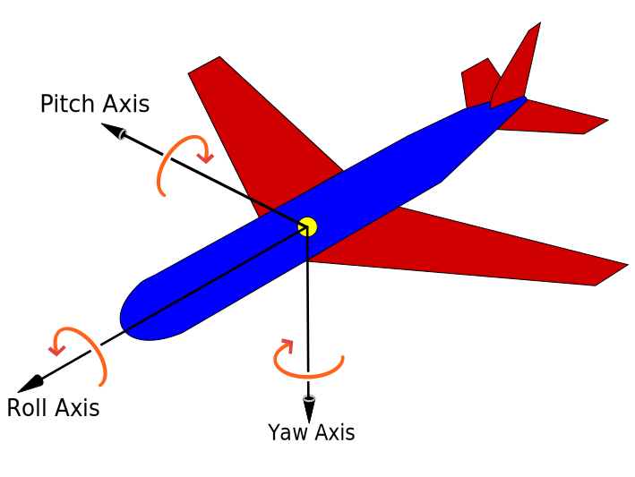
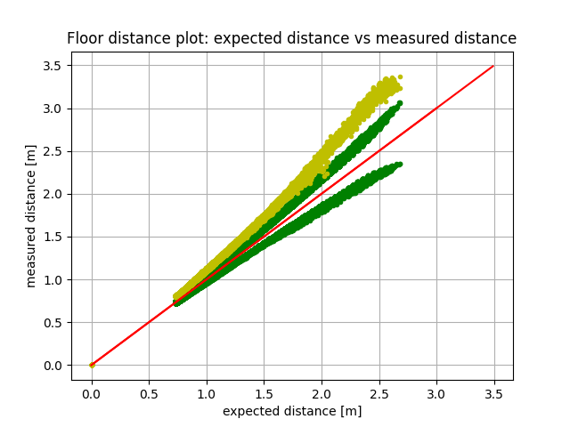
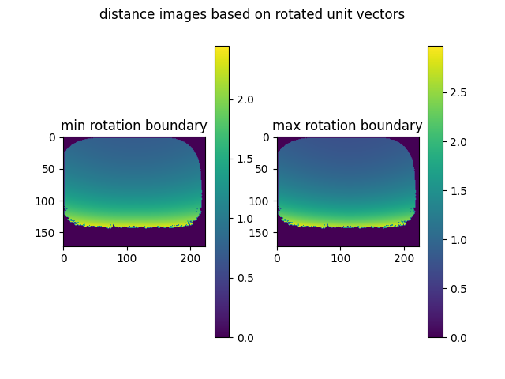
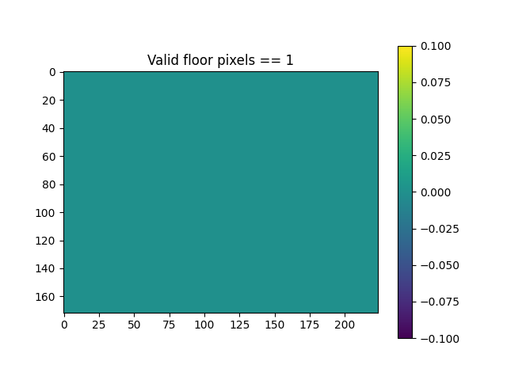
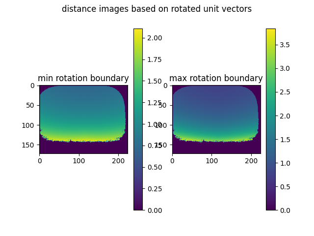
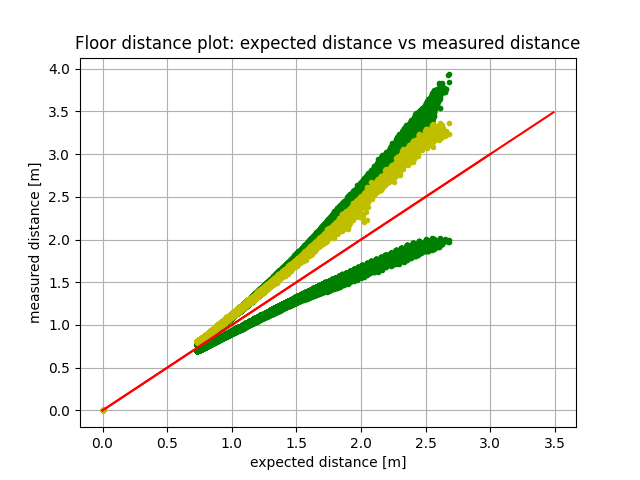
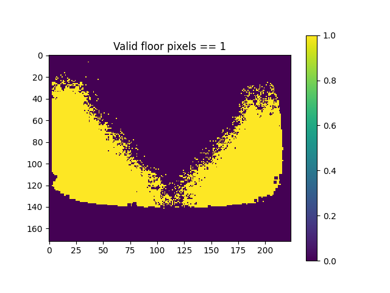

How to verify the extrinsic calibration
A verification of the extrinsic calibration is a necessary step to ensure the best functionality and data quality of any distance based measurement sensor technology.
Such verification can be done by using the same tools as estimating the extrinsic calibration parameters. This however increases the complexity and effort to provide reproducible calibration conditions in the field, where such verification is required.
Alternative methods should be based on simpler approaches where calibration conditions don’t depend as much on external calibration tools, such as checkerboards and known geometric relations. Such in situ methods should be based on natural geometric relations to the existing operation environment of the robot.
Below such a in situ method is described aimed at the verification of the extrinsic calibration of 3D cameras.
Concept of this verification method
This verification method is based on simple O3R ToF distance dataset and does not require any specific ODS data. The users sets the 3D extrinsic calibration which is verified in using this procedure.
The concept behind this verification is to test a measured horizontal floor plane (to be present in the scene) for rotation validity in two angle directions: roll, and pitch angles in 3D space against a reference plane. For this purpose a reference floor plane is calculated based on the user input extrinsic calibration parameters and an a-priori knowledge of the intrinsic camera calibration parameters.
Rotating this reference floor plane with additional rotation matrices of the critical extrinsic calibration angles (in RCS space) provides the distance boundaries per pixel. The critical angles of the extrinsic calibration, i.e. precision required for ODS, determine the distance value boundaries per pixel.
For easier handling the problem statement is reduced by one spatial domain, i.e. reduced from a three dimensional problem statement to a two dimensional problem statement, by comparing measured floor plane distances vs. reference floor plane distances.
This method implicitly tests the extrinsic translation parameter in Z-component. The extrinsic translation parameters in X- and Y-components can not be tested.
Overview of extrinsic calibration angle parameters and their effect
Extrinsic calibration methods estimate the 6 degree of freedom (Dof) 3D pose of the camera in relation to a fixed point on in the robot coordinate system.
This includes two sets of extrinsic calibration parameters: 3 translation vectors in 3D space, and 3 rotation angles in 3D space. For further details see the whitepaper about extrinsic calibration methods for cameras.
The presented method for extrinsic calibration verification validates 2 angle parameters: the roll and pitch angles in 3D space.
As a refresher, see the picture on angle definitions in 3D space below:

The forward movement direction of the AGV / AMR coincides with indicated flight direction of the airplane in the picture above.
As can be intuitively seen only rotations in roll and pitch have a noticeable effect on an imagined horizontal plane at Z==0.
Hence only these rotation values can be verified with the method presented here.
How to calculate the expected floor plane distances?
To calculate an expected floor plane based on the cameras intrinsic and extrinsic calibration the following templates have to be used:
Calculated unit vectors based on the cameras intrinsic calibration.
Rotate the unit vectors into the same orientation as the user specified Robot Coordinate System (RCS).
Calculate the expected floor plane distances based on the rotated unit vectors and the known extrinsic camera calibration parameter.
Unit vectors based on a Bouguet model
# intrinsicModelID == 0 # Bouguet model
fx, fy, mx, my, alpha, k1, k2, k3, k4, k5 = intrinsicModelParameters[:10]
iy, ix = np.indices((height, width))
cx = (ix + 0.5 - mx) / fx
cy = (iy + 0.5 - my) / fy
cx -= alpha * cy
r2 = cx**2 + cy**2
fradial = 1 + r2 * (k1 + r2 * (k2 + r2 * k5))
h = 2 * cx * cy
tx = k3 * h + k4 * (r2 + 2 * cx**2)
ty = k3 * (r2 + 2 * cy**2) + k4 * h
dx = fradial * cx + tx
dy = fradial * cy + ty
fnorm = 1 / np.sqrt(dx**2 + dy**2 + 1)
ux = fnorm * dx
uy = fnorm * dy
uz = fnorm
Unit vectors based on a fish eye model
# intrinsicModelID == 2: # fish eye model
fx, fy, mx, my, alpha, k1, k2, k3, k4, theta_max = intrinsicModelParameters[:10]
iy, ix = np.indices((height, width))
cx = (ix + 0.5 - mx) / fx
cy = (iy + 0.5 - my) / fy
cx -= alpha * cy
theta_s = np.sqrt(cx**2 + cy**2)
phi_s = np.minimum(theta_s, theta_max)
p_radial = 1 + phi_s**2 * (k1 + phi_s**2 * (k2 + phi_s**2 * (k3 + phi_s**2 * k4)))
theta = theta_s * p_radial
theta = np.clip(theta, 0, np.pi) # -> avoid surprises at image corners of extreme fisheyes
ux = np.choose((theta_s > 0), (0, (cx / theta_s) * np.sin(theta)))
uy = np.choose((theta_s > 0), (0, (cy / theta_s) * np.sin(theta)))
uz = np.cos(theta)
For rotating points or rays in space a three dimensional rotation matrix is required. For an example implementation see the code block below.
Rotation matrix in 3D space
def rotMat(r, order=(0, 1, 2)):
R = np.eye(3)
for i in order:
lr = np.eye(3)
lr[(i + 1) % 3, (i + 1) % 3] = np.cos(r[i])
lr[(i + 2) % 3, (i + 2) % 3] = np.cos(r[i])
lr[(i + 1) % 3, (i + 2) % 3] = -np.sin(r[i])
lr[(i + 2) % 3, (i + 1) % 3] = np.sin(r[i])
R = R.dot(lr)
return R
The following code block demonstrates the calculation routine for rotated floor distances, i.e. the building block of this verification method. Based on two rotation matrices the distances of the floor pixels are calculated:
R corresponds to the rotation matrix as determined by the user input extrinsic calibration parameters.
RR corresponds to the additional rotation matrix introduce to simulate rotations in additional roll and pitch angles.
# modelID3D = 0 or 2 depending on the O3R camera head
# imager_size = [172,224] expects a image dimension of (172, 224) == 38k imager
# intrinsics3D intrinsic camera calibration parameters, see functions above
def get_rotated_distances(self, R: np.ndarray, RR: np.ndarray):
ux, uy, uz = intrinsic_projection(modelID3D, intrinsics3D, *imager_size)
e_flatten = np.stack((ux.flatten(), uy.flatten(), uz.flatten()), axis=0)
e_rot = (RR @ R).dot(e_flatten)
e_3 = e_rot[-1, :]
d_rot_flat = -1 / e_3 * extrinsic3D[2]
return d_rot_flat
d_rot = d_rot_flat.reshape(*imager_size)
For easier calculation purpose the unit vectors matrices, which are 2D matrices of the same dimension as the image, have to be flattened.
A consecutive left side matrix multiplication of combined rotation matrices gives the rotated unit vectors in RCS space.
The expected floor distance (per pixel) can be calculated via a scalar multiplication of 1/unit__vector_in_Z and trans Z: i.e. d = (-1 / e_3) * extrinsic3D[2]
The mathematical concept behind this idea is a simple linear equation:
R * unit_vectors * d + translation = [a,b,0]
R * [ux, uy, uz] * d + [trans_x, trans_y, trans_z] = [a,b,0]
[ex, ey, ez] * d + [trans_x, trans_y, trans_z] = [a,b,0]
solving this equation for d gives:
d = (-1 / ez) * trans_z = (-1 / e_3) * extrinsic3D[2]
Measured floor plane distance and rotated reference floor plane distances comparison
Based on the described concepts above reference floor plane can be estimated in RCS space.
Rotating this reference floor plane with additional rotation matrices of the critical extrinsic calibration angles (in RCS space) provides the distance boundaries per pixel: i.e. a distance map per rotation.
For all possible angle rotations in roll and pitch angle the distance map has to be compared for smaller and larger distances per pixel. These lower and upper boundaries determine the validity of the actual measured distances as a binary map.
Applications of this extrinsic calibration verification method
Below a couple of application of a extrinsic calibration verification tool are sketched.
CAD based extrinsic calibration parameters
Using the CAD based calculations of the 3D extrinsics pose is a valid option if production and assembly accuracy is sufficient to ensure the demanded extrinsic calibrations accuracies, e.g. 1 deg per rotation angle parameters and 1 cm per translation parameter.
A sanity check that the calculated parameters are correct and no mechanical designs have been altered since the calculation of the parameters is highly suggested.
For this application the camera heads are mounted in their final position and the CAD based extrinsic calibration parameters JSON set. The validation method gives a good indication if the calibration matches the expected distance measurements for an “empty / no objects just floor” scene.
Verifying other extrinsic calibration methods
Other calibration tools such as the single frame checkerboard calibration routine and the multi frame calibration routine provide an estimation of the pose transformation.
The tools are based on a 2D PnP based approaches. Systematic (implicit) errors between the placement of the 3D lens inside the camera heads housing and other biases might not be apparent when using these routines. These errors might include:
wrong reference points
unintended rotations of the sensor relative to the RCS frame
wrong distance reference points when manually measuring the checkerboard position in relation to the RCS
alterations in the positioning of the robot wrt to the calibration patter and vice versa
An additional sanity check based on the native 3D measurements and estimated extrinsic calibration can indicate possible systematic errors. This indication should be used to verify the result of the calibration right after its application and in regular time intervals to find possible alterations of “calibration stations”.
Sanity checks: in production - after modification
Sanity checks of the extrinsic calibration are highly suggested. They should be done in regular time intervals and after specific events:
Regular time intervals: depending on the rigidity of the mounting structure a regular sanity check of the extrinsic calibration might be required
Specific events: after specific events a sanity check and possible recalibration might be required. These include:
After shipment: after shipping the robot between facilities at least a calibration verification is required.
After high mechanical stress events such as: a verification and recalibration is required
Dropping of an AGV
Accidents of any kind and severity
Replacement of O3R hardware components: any replacement of O3R hardware (VPUs or camera heads) requires at least a sanity check of the calibration and possible recalibration.
Example application of the extrinsic calibration verification tool
For demonstration purposes two sets of evaluations for different max / min allowed rotation angles are shown below. The extrinsic calibration in this data as input by the user is off in pitch angle by ~ 3.5 deg. For this reason the calibration verification script fails.
The ODS extrinsic calibration rotation requirement calls for a angle accuracy of [-1, +1] deg. This is equivalent for the first set of images.
Max allowed rotation angle inaccuracy: [-1, +1] deg
This plot shows the floor pixel distance measurement distribution.
The plot shows the measured distances of the floor in yellow vs the expected floor distances for a perfect calibration in red: angle bisector.
The green dots mark the upper and lower boundaries for an acceptable calibration result with difference in angles (roll and pitch = [+1 deg, -1 deg]) as their respective distance measurements.
As can be seen in this plot most yellow points, i.e. actual distance measurements, are outside the acceptable distance range - green points. This means the calibration result is not valid.

Based on the maximum allowed rotation inaccuracies a distance map can be built: i.e. lower and upper distance thresholds per imager matrix pixel.

Based on these distance maps the actual distance measurements can be verified by testing if measurement values are inside the allowed range per pixel. 
In this case the extrinsic calibration user input is off too much for even a single pixel to be considered valid. The valid floor pixel map is a uniform invalid matrix. The verification method raises a Assertion error.
Max allowed rotation angle inaccuracy: [-3, +3] deg
  
For a relaxed set of angle rotation accuracies [-3, +3] deg, the valid floor pixel map includes possible valid pixels.
None the less the number of allowed invalid pixels is larger than the threshold. The verification method raises a Assertion error.